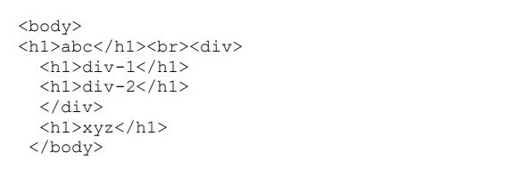
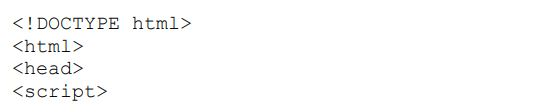
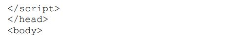

1. In jQuery terminology, what is the difference between the “jQuery function” and the “jQuery object”? -> JQuery function is the function that wraps DOM element to enhhance their performance by using jquery library.
-> JQuery object is the object returned by the jquery function and represents set of document elements. 2. Write jQuery code to find all h1 elements that are children of a div element and make their background color red. Sample HTML:  $("div h1").css("background-color":"red");
3. Use a jQuery method to insert the text "YES!" at the end of theelement.  $("p").append("YES");  Is jQuery FUN or what? Yes it is.